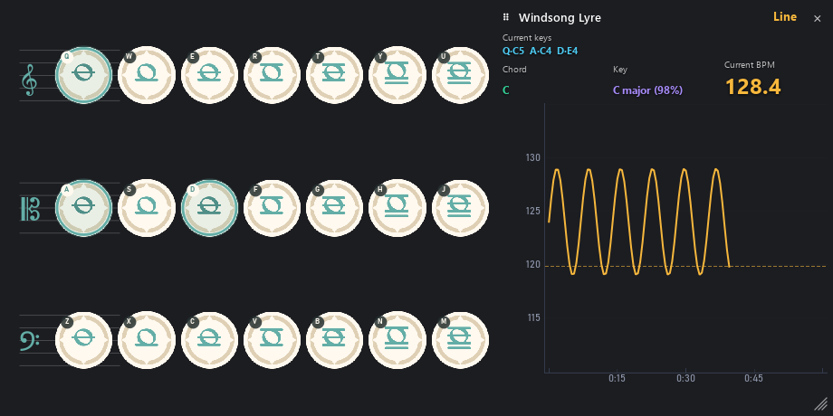

Six instruments
Windsong Lyre, Floral Zither, Vintage Lyre, Harmonic Keys, Nightwind Horn and Ukulele — with the correct 21/14/12-key layouts.
Windows 1.1.3 · Android 1.1.1
A real-time detector for the six playable instruments in Genshin Impact. It listens to your speakers (or microphone), shows the keys and chords being played, and measures the key, note durations and BPM as you perform.
Free · No telemetry · Open source on GitHub

What it does
Windsong Lyre, Floral Zither, Vintage Lyre, Harmonic Keys, Nightwind Horn and Ukulele — with the correct 21/14/12-key layouts.
Highlights the keys currently held, names the chord (C, Dm, Em, F, G, Am, G7 …) and estimates the key with a confidence value.
Every note gets an onset-aligned start time, duration, gap and end reason (key release/cutoff, same-key re-press or natural decay).
A BPM line by default (switchable to bars) with auto-scaling axis, 30 s / 1 min / 5 min / all ranges, hover readouts and a floating always-on-top view.
Flags evidence of operations beyond human limits: more than 10 keys at once, or a very long run of perfectly even gaps.
Analyze a WAV recording from the command line and get the full report, including per-second BPM readings.
New in 1.1.3 · Windows
A fully transparent, frameless always-on-top overlay mirrors the keyboard plus the current keys, chord, key, BPM and BPM curve. Put it over the game, switch instruments from its dropdown, drag the header to move it and use the corner grip to resize.


Get the app
The Windows installer is hosted directly on this site. The portable build and Android APK come from GitHub Releases.
Windows 10/11, 64-bit. The installer is per-user and needs no administrator rights.
Installer · hosted hereGenshinInstrumentDetector-1.1.3-win64-setup.exe
PortableGenshinInstrumentDetector-1.1.3-win64-portable.exe
Android 7.0 and newer. Includes the built-in update check and a fixed release signature since 1.1.0.
APKGenshinInstrumentDetector-1.1.1-android.apk
Privacy & security
Audio never leaves your computer. There is no analytics, account or cloud processing.
An optional HTTPS query to GitHub Releases with a 12 s timeout, a 512 KB metadata cap and a 200 MB installer cap.
Automatic updates download only from the repository release, verify the published SHA-256 and PE header, then run the installer. Off by default.
From 1.1.0 every APK uses the same release certificate, so newer versions install over older ones. The in-app check downloads and verifies the APK.